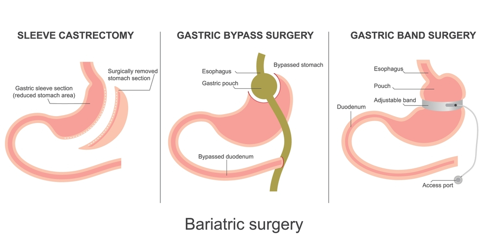
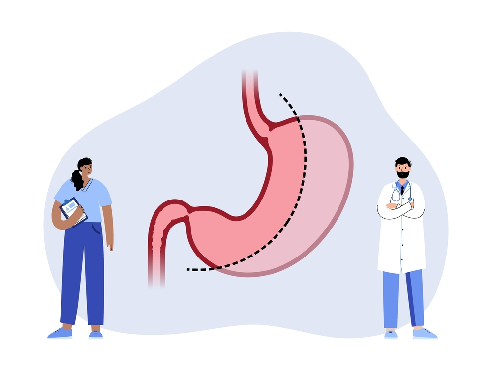

Bariatric surgery is not just a procedure — it’s a permanent reconfiguration of how your digestive system functions and how your body handles nutrition, hunger, hormones, and healing. It offers immense benefits, such as dramatic weight loss, reversal of type 2 diabetes, improved heart health, and increased mobility. However, these benefits do not come without trade-offs.
Throughout this article, we’ll explore various types of bariatric surgery, outline their most common complications, and offer expert insights into how to prevent or manage them. If you’re seriously considering this life-altering procedure, asking “What are the side effects of bariatric surgery?” is not a sign of doubt — it’s a sign of maturity and informed decision-making.
Understanding Bariatric Surgery
Bariatric surgery refers to a group of surgical procedures designed to help individuals with severe obesity lose weight by altering the digestive system. Common types include gastric bypass, sleeve gastrectomy, and adjustable gastric banding. These procedures reduce the size of the stomach or reroute parts of the digestive tract to limit food intake and nutrient absorption.
Beyond weight loss, bariatric surgery can improve or resolve conditions like type 2 diabetes, hypertension, and sleep apnea. It requires lifelong lifestyle changes, including dietary adjustments and follow-up care, to ensure lasting results and prevent complications.
Procedures in Bariatric Surgery
Before we dissect the side effects, it’s crucial to understand the procedures themselves. Bariatric surgery is not a single technique, but a group of surgeries aimed at helping people lose weight when traditional methods like diet and exercise have failed. Each type works differently and brings with it a unique set of benefits and risks.

1. Gastric Bypass (Roux-en-Y)
In this procedure, the stomach is divided into a small upper pouch and a larger lower section. The small pouch is connected directly to the small intestine, bypassing most of the stomach and the first part of the small bowel. This reduces food intake and nutrient absorption.
Pros: Rapid weight loss, improvement in diabetes, and metabolic syndrome
Risks: Nutritional deficiencies, dumping syndrome, marginal ulcers
2. Sleeve Gastrectomy
Here, about 75–80% of the stomach is surgically removed, leaving behind a sleeve-shaped stomach about the size of a banana. It restricts how much food can be consumed at once and impacts hunger hormones like ghrelin.
Pros: Simpler than bypass, fewer complications, preserves digestion
Risks: Acid reflux, strictures, long-term vitamin deficiency
3. Adjustable Gastric Banding
A silicone band is placed around the upper part of the stomach to limit food intake. The band’s tightness can be adjusted over time.
Pros: Reversible, adjustable, no cutting of intestines
Risks: Slower weight loss, band slippage, device-related complications
4. Biliopancreatic Diversion with Duodenal Switch (BPD/DS)
A complex operation that involves both sleeve gastrectomy and significant bypass of the small intestine.
Pros: Greatest weight loss and best metabolic improvement
Risks: High risk of malnutrition, technically demanding, and long hospital stay
When we ask “What are the side effects of bariatric surgery?”, we must specify which procedure we’re referring to, as each one presents a unique risk profile. That’s why choosing an experienced specialist like the Best Bariatric Surgeon in Delhi is essential to guide you toward the most appropriate surgery based on your medical history, BMI, and comorbidities.
Short-Term Side Effects After Bariatric Surgery
In the early days following the procedure, most patients ask: “Is this discomfort normal?” The answer is often yes. Short-term side effects are the body’s natural response to major surgical intervention and sudden changes in food intake, digestion, and hormone balance.
1. Pain and Discomfort
- What to expect: Mild to moderate abdominal pain at incision sites or inside the abdomen.
- Why it happens: Tissue healing, gas used during laparoscopy, or bowel movements returning to normal.
- Management: Pain medications, walking to release trapped gas, and light activity can help.
2. Nausea and Vomiting
- What to expect: Nausea is common, especially when transitioning from liquids to solids.
- Why it happens: Overeating, eating too fast, or introducing certain foods too soon.
- Management: Stick to the post-op diet plan and follow advice from your nutritionist and surgical team.
3. Fatigue
- What to expect: Feeling tired or low on energy in the first few weeks.
- Why it happens: Sudden calorie restriction, reduced food intake, and healing demands energy.
- Management: Adequate hydration, supplements, and gradually increasing physical activity help restore energy.
4. Constipation or Diarrhea
- What to expect: Bowel habits may be irregular initially.
- Why it happens: Dietary changes, painkillers, dehydration, or reduced food volume.
- Management: Increase fluids, include fiber when allowed, and use gentle laxatives only under guidance.
5. Dumping Syndrome
- What to expect: Nausea, cramping, dizziness, diarrhea after eating sugar or high-fat foods.
- Why it happens: Most common after gastric bypass; occurs when food empties too quickly into the small intestine.
- Management: Avoid sugary and fatty foods, eat slowly, and focus on protein-first meals.
Long-Term Side Effects of Bariatric Surgery
Once patients get through the early recovery phase, they often feel a surge of confidence, especially as the kilos begin to drop. However, the question still stands — “What are the side effects of bariatric surgery in the long run?” Because the surgery changes your digestive anatomy and metabolism permanently, some side effects may develop months or even years after the procedure.
1. Nutritional Deficiencies
One of the most significant risks post-surgery is a deficiency of essential nutrients, particularly in bypass or duodenal switch surgeries where absorption is reduced.
- Common Deficiencies: Vitamin B12, iron, calcium, folate, vitamin D, and sometimes protein.
- Complications: Anemia, bone thinning (osteopenia/osteoporosis), fatigue, hair loss, tingling or numbness, and muscle loss.
- Management: Lifelong vitamin and mineral supplements, regular blood tests, and nutritionist-guided diet plans.
2. Gallstones
- Why it happens: Rapid weight loss alters bile composition and increases the chance of stone formation.
- Risks: Gallstones can cause pain, nausea, or pancreatitis; some patients may eventually need gallbladder removal.
3. Ulcers
- More common in: Gastric bypass patients, especially those who smoke or use NSAIDs like ibuprofen.
- Symptoms: Pain, indigestion, or bleeding.
- Management: Avoid NSAIDs, stop smoking, and adhere to the recommended diet.
4. Strictures and Stenosis
- What it is: Narrowing of the surgical connection between the stomach and intestines (especially in gastric bypass).
- Symptoms: Difficulty swallowing, vomiting, or food intolerance.
- Treatment: Endoscopic balloon dilation or revision surgery in rare cases.
5. Internal Hernias and Obstruction
- What it is: Twisting or displacement of the intestines due to the anatomical changes post-surgery.
- Symptoms: Severe abdominal pain, nausea, vomiting, and bloating.
- Management: May require urgent surgical correction.
Even these complications are not automatic — they are risks, not certainties. When you work with an experienced provider such as Dr. Atul Peters, you’re more likely to receive early detection and preventive measures through structured follow-up care.
Psychological and Emotional Side Effects

When people ask, “What are the side effects of bariatric surgery?” they often focus on physical and nutritional outcomes. However, a less visible but equally significant category of side effects is psychological. The rapid weight loss, lifestyle upheaval, and identity shifts post-surgery can trigger intense emotional responses, both positive and negative.
1. Depression and Mood Swings
- Why it happens: Hormonal shifts, dietary restrictions, body image issues, and social isolation.
- When it appears: Usually in the first 6–12 months, especially after the “honeymoon period” of weight loss starts to fade.
- Management: Regular counseling, joining bariatric support groups, and open communication with your care team.
Some patients also mourn the loss of food as a coping mechanism. Food is not just fuel — for many, it’s comfort, celebration, and identity. Its sudden removal can cause emotional imbalance.
2. Body Dysmorphia
- What it is: A disconnect between actual body changes and how the patient perceives.
- Symptoms: Patients may continue to see themselves as “fat” despite losing substantial weight.
- Consequence: Can lead to anxiety, obsessive weighing, and sometimes disordered eating.
3. Relationship Strains
- Why it happens: As patients become more active, independent, and confident, personal dynamics with partners, family, or friends may shift.
- Common outcomes: Misunderstanding, jealousy, or imbalance in emotional support.
- Solution: Encourage therapy and involve close family members in educational sessions pre- and post-op.
Psychological health is not an optional add-on — it’s a central pillar of bariatric success. Comprehensive aftercare from a bariatric surgeon will always include mental health evaluation and support.
Hormonal and Metabolic Effects
Many patients are surprised to learn that bariatric surgery doesn’t just reshape the stomach — it also reprograms hormones, metabolism, and insulin regulation. So, when asking “What are the side effects of bariatric surgery?”, one must consider how profoundly it rewires your body’s biochemistry.
1. Hunger Hormone Changes
- Key hormone affected: Ghrelin, also called the “hunger hormone,” which is mainly produced in the stomach.
- After surgery: Ghrelin levels drop, especially after sleeve gastrectomy, reducing appetite significantly.
- Side effect: Some patients report having no desire to eat, which may sound ideal but can lead to undernutrition or fatigue if not monitored.
On the flip side, hunger may eventually return over time as the body adapts.
2. Improved Insulin Sensitivity
- Good news: Many patients with type 2 diabetes see immediate improvements post-surgery — some even before any major weight loss.
- Why: The re-routing of the intestine affects hormonal signaling, especially GLP-1 and PYY, which improve insulin response.
3. Reactive Hypoglycemia
- What it is: A rare but concerning side effect, especially after gastric bypass.
- When it happens: 1–3 hours after meals.
- Symptoms: Dizziness, sweating, weakness, and confusion due to low blood sugar levels.
- Management: Eating small, balanced meals throughout the day and avoiding sugar-rich foods.
These hormonal changes explain why bariatric surgery is not just a weight-loss tool but a metabolic reset. This is also why it’s recommended even for non-obese patients with uncontrolled type 2 diabetes.
Weight Regain: The Most Feared Long-Term Effect
Perhaps the most emotionally challenging and deeply feared answer to the question” is weight regain“. While bariatric surgery significantly reduces appetite and food intake, it is not an immunity shield against future weight gain. Some patients regain a portion of their lost weight within 2 to 5 years post-surgery.
Why Does Weight Regain Happen?
- Stretching of the stomach pouch or sleeve over time
- Emotional or binge eating was not addressed during psychological follow-up
- Poor diet choices, such as high-calorie liquids, processed snacks, or frequent grazing
- Lack of physical activity post-weight loss
- Alcohol consumption, which adds calories and often leads to disinhibited eating
How to Prevent It?
- Follow structured meal plans with portion control
- Prioritize protein and fiber over carbs and fats
- Engage in daily physical activity, even if light
- Attend regular support group sessions
- Have consistent check-ups with your bariatric team
Advanced Bariatric Surgery by Dr. Atul Peters!
Contact Now!
Book Your Appointment
Can these Side Effects be Prevented?
After reading through the multiple risks and complications, a natural follow-up question arises: Can these side effects of bariatric surgery be prevented? The short answer is: not all, but many can be managed or minimized with proper preparation, follow-up care, and long-term commitment.
Even the most skilled operation performed by the Bariatric Surgeon cannot guarantee zero complications. However, what truly separates successful outcomes from unsuccessful ones is what happens after surgery — the follow-through, the routine, the vigilance.
Key Strategies for Side Effect Prevention:
1. Choose an Experienced Surgeon and Accredited Facility
- Selecting a well-trained, board-certified specialist ensures that your surgery is done with the highest safety standards.
- A center that offers a multidisciplinary approach — including nutritionists, psychologists, and endocrinologists — will support all aspects of your recovery.
2. Stick to the Dietary Guidelines
- Eat slowly, chew thoroughly, and follow portion sizes.
- Avoid trigger foods like sugar, alcohol, carbonated drinks, and high-fat items.
- Protein and hydration are the non-negotiable cornerstones of a post-bariatric diet.
3. Commit to Lifelong Supplements
- Vitamin and mineral deficiencies are preventable with adherence to prescribed supplements.
- Never skip lab tests or check-ups. Nutrient levels need to be monitored and adjusted periodically.
4. Make Movement a Daily Habit
- Start walking as early as possible post-surgery.
- Gradually increase activity to improve muscle tone, mental well-being, and metabolic health.
5. Prioritize Mental Health
- Attend therapy or support groups to address emotional eating, anxiety, or relationship dynamics.
- Understand that weight loss will not solve all psychological issues, but it can give you the space and motivation to work on them.
Conclusion
Bariatric surgery is a powerful intervention. It changes lives, extends longevity, and resolves chronic illnesses that have robbed people of their mobility, confidence, and hope. But it is not a magic wand. It comes with its own set of consequences — some predictable, others unexpected.
So, what are the side effects of bariatric surgery? They range from minor discomforts like nausea or fatigue in the short term to major issues like nutritional deficiencies, psychological struggles, or even weight regain in the long term. Skin changes, hormonal shifts, digestive complications, and emotional ups and downs are all part of the complex reality after surgery.
Frequently Asked Questions
Q1: What are the most common side effects after bariatric surgery?
Common side effects include nausea, vomiting, fatigue, constipation, and pain at the incision site. These typically occur in the first few weeks and are manageable with proper care.
Q2: Can bariatric surgery cause nutritional deficiencies?
Yes. Deficiencies in vitamins B12, D, iron, calcium, and folate are common due to reduced absorption. Lifelong supplements and regular monitoring are essential.
Q3: Will I gain weight again after bariatric surgery?
Weight regain is possible if post-surgery lifestyle changes aren’t maintained. Diet, exercise, and regular follow-ups help prevent this.
Q4: Are there psychological side effects after surgery?
Some patients experience mood swings, depression, or body image issues. Support groups and counseling are recommended as part of recovery.
Q5: Is hair loss a side effect of bariatric surgery?
Yes, temporary hair thinning can occur due to rapid weight loss and nutritional changes, especially in the first 6 months.
Recommended Further Reading
Have Personal Health Questions?
Consult with Dr. Atul Peters and our expert multidisciplinary team at Max Smart Super Speciality Hospital, Saket, New Delhi.
Book Your Consultation